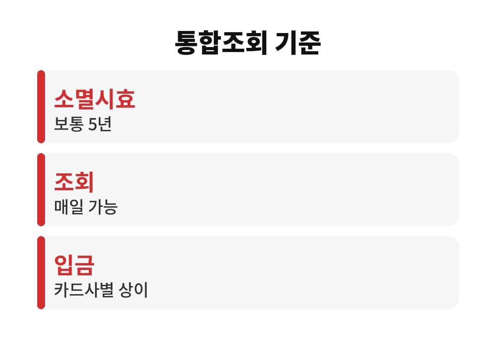
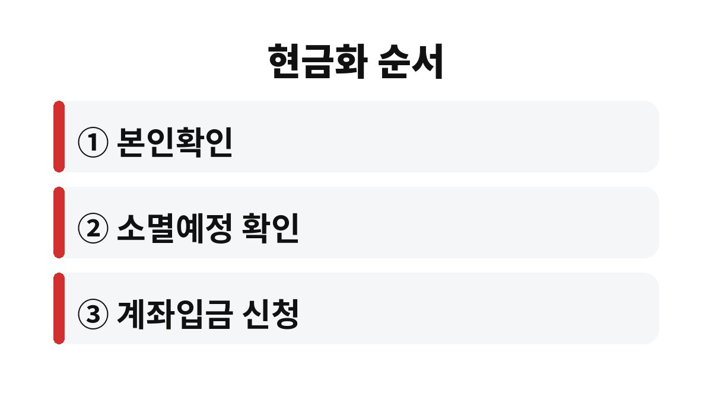

카드 포인트 현금화는 여신금융협회 카드포인트 통합조회에서 카드사별 잔여 포인트와 소멸예정 포인트를 확인한 뒤, 계좌입금을 신청하는 순서로 끝납니다.
카드를 여러 장 쓰는 가정이 2026년 11월 기준으로 흩어진 포인트를 한 번에 정리하는 순서를 적었습니다.
새해가 되면 포인트가 한꺼번에 없어진다는 말을 흔히 듣습니다.
카드 포인트의 소멸시효는 보통 적립일로부터 5년이며, 카드사와 포인트 종류에 따라 다를 수 있습니다.
연말이라서 급히 처리해야 하는 것은 아닙니다.
통합조회와 현금 입금은 특정 시기에만 되는 서비스가 아닙니다.
매일 조회하고 신청할 수 있습니다.
카드사 앱을 하나씩 열 필요가 없습니다.
여신금융협회 통합조회에서 본인확인을 한 번 하면 카드사별 잔여 포인트와 소멸예정 포인트, 소멸예정 월이 함께 나옵니다.
저는 카드 앱을 따로 열었다가 어느 카드에 포인트가 남았는지 잊는 일이 잦아서, 한 화면에서 보는 쪽이 낫다고 느꼈습니다.
| 확인 항목 | 내용 | 확인 방법 |
|---|---|---|
| 조회처 | 여신금융협회 카드포인트 통합조회 | 홈페이지나 앱에서 본인확인 후 조회합니다 |
| 소멸시효 | 보통 5년, 카드사별로 다를 수 있음 | 소멸예정 포인트와 소멸예정 월을 봅니다 |
| 입금 시점 | 카드사별로 실시간 또는 다음 영업일 | 신청 화면의 카드사별 안내를 읽습니다 |
| 입금 단위·수수료 | 카드사마다 다를 수 있음 | 신청 전 화면에서 직접 확인합니다 |

입금 시점은 카드사마다 갈립니다.
비씨, 신한, 우리, KB국민, NH농협은 실시간 입금으로 안내되고, 삼성, 씨티, 우체국, 롯데는 다음 영업일 입금으로 안내됩니다.
현대와 하나는 정해진 시간대에는 실시간, 그 밖의 시간에는 다음 영업일입니다.
신청하는 순간 포인트는 바로 차감되므로 입금 계좌 번호를 잘못 고르지 않도록 주의합니다.
예를 들어 여러 장의 카드로 나눠 쓴 가정이라면 카드마다 몇 천 포인트씩 흩어져 있는 경우가 많습니다.
한 장씩 보면 하찮아 보여도 통합조회에서 합쳐 보면 생각보다 큰 금액이 되는 일이 있습니다.

모든 포인트를 반드시 현금으로 바꿔야 하는 것은 아닙니다.
다음 달 결제 때 포인트를 먼저 쓰는 자동사용 기능을 이미 켜 둔 카드라면 굳이 옮기지 않아도 같은 효과가 납니다.
금융감독원은 이 자동사용 서비스를 2026년 2월부터 전 카드사로 넓힌다고 안내한 것으로 보도됐습니다.
다만 카드사마다 적용 시점과 방식이 달라 카드사 앱에서 직접 확인해야 합니다.
아주 적은 금액은 입금 단위에 못 미쳐 신청이 안 될 수도 있습니다.
반대로 소멸예정 월이 한참 남은 포인트는 서두를 이유가 없습니다.
포인트가 쌓인 카드를 자주 쓰는 편이라면 현금으로 옮기는 대신 결제 때 차감하는 쪽이 번거로움이 적습니다.
현금화는 안 쓰는 카드, 해지를 앞둔 카드, 소멸예정 포인트가 있는 카드에 우선 쓰는 방법으로 생각하면 됩니다.
이번 주에 할 일은 통합조회에 한 번 접속해 소멸예정 포인트가 있는 카드를 찾아보는 것입니다.
금액이 크거나 카드 상태가 헷갈리면 카드사 고객센터에 문의하는 편이 정확합니다.
해지한 카드의 포인트는 해지 시점에 따라 조회 여부가 달라질 수 있어, 해지 전에 잔여 포인트부터 확인해 두면 손해를 줄일 수 있습니다.
소멸시효가 지났거나 소멸예정인 포인트는 신청 전에 카드사 안내 문구를 한 번 더 읽습니다.
참고 자료: 여신금융협회 「카드포인트 통합조회」(2026년 11월 확인)
※ 본 글은 2026년 기준 공개 자료를 바탕으로 정리한 정보이며, 세금·금융 상품 선택은 본인 상황에 맞게 전문가와 확인하시길 바랍니다.